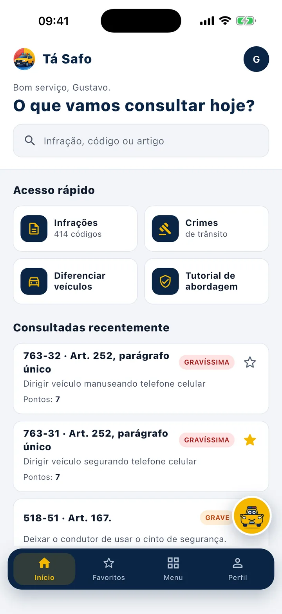
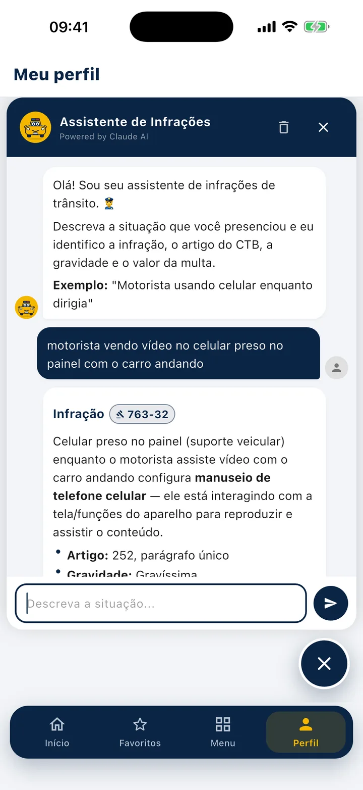
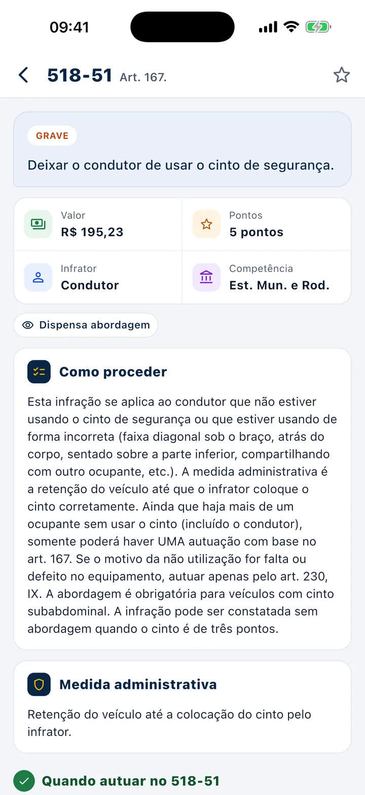
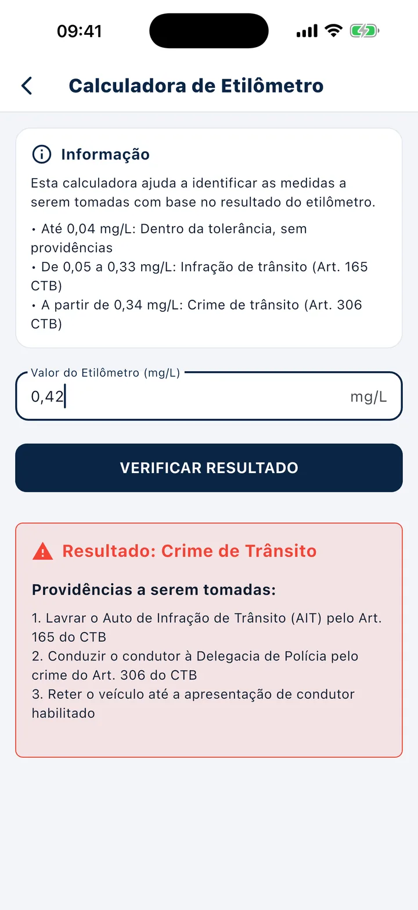
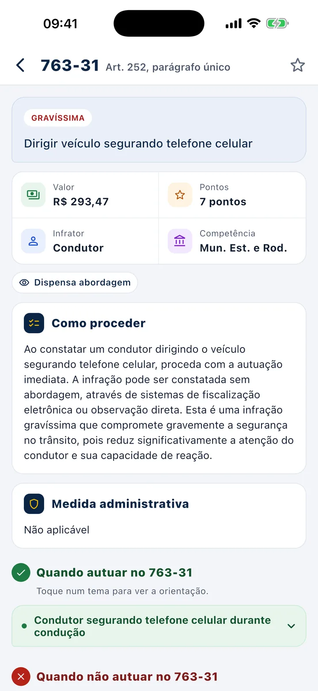
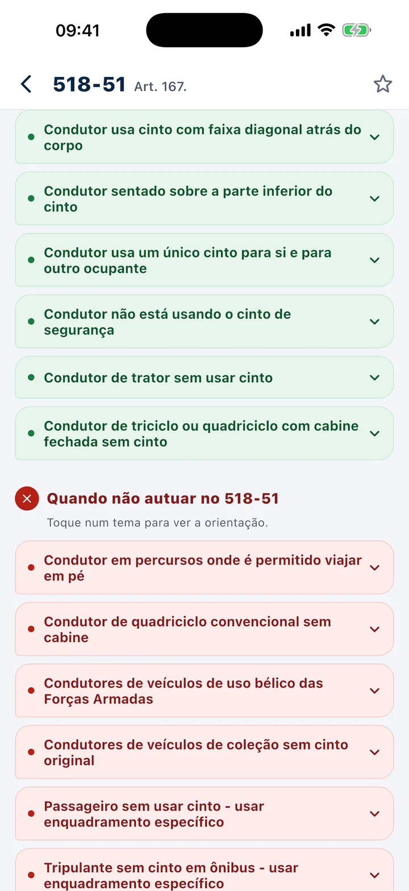
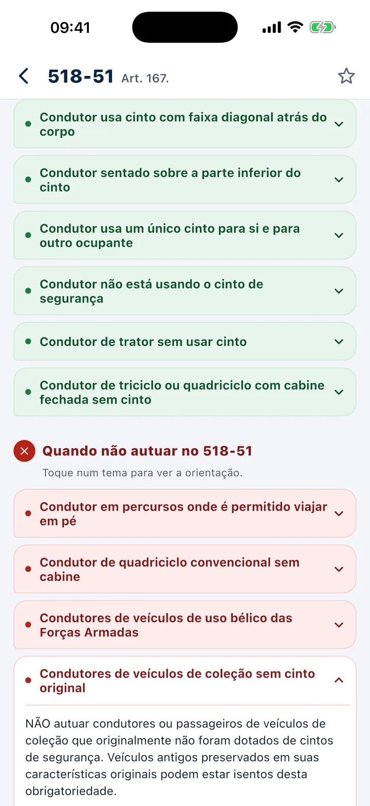
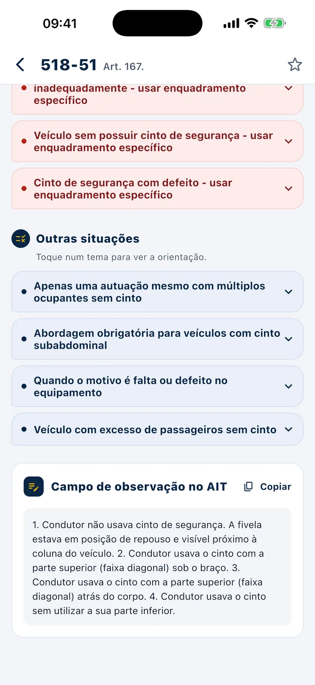

Gravidade, valor e pontos em um quadro só.
A gravidade e a descrição em destaque. Logo abaixo, valor da multa, pontos, infrator (condutor, proprietário…) e competência (municipal, estadual, rodoviária).
- R$ 195,23
- 5 pontos
- Condutor
- Est. Mun. e Rod.
Descreva a abordagem. Receba o enquadramento.
O parceiro de bolso do agente de trânsito: todo o CTB com orientação de quem fiscaliza — quando autuar, quando não autuar e o que escrever no AIT. E um assistente com inteligência artificial que enquadra a situação que você descreve.




infrações do CTB, cada uma com ficha completa
orientações de fiscalização: autuar, não autuar e outras situações
placas de regulamentação, com significado
resoluções do CONTRAN resumidas em linguagem simples
situações de fiscalização testadas no assistente, com resposta conferida
modelos de histórico prontos para copiar, em 4 categorias
tipos de veículo no tutorial de abordagem
tipos de veículo em “Diferenciar veículos”
Descreva a situação com as suas palavras — por exemplo, “motorista vendo vídeo no celular preso no painel com o carro andando”. A resposta vem pronta para a abordagem:
O assistente é uma ferramenta de apoio: a decisão final e a responsabilidade pelo auto são sempre do agente.
Olá! Sou seu assistente de infrações de trânsito.
Descreva a situação que você presenciou e eu identifico a infração, o artigo do CTB, a gravidade e o valor da multa.
Toque num exemplo abaixo para ver como a resposta chega.
Demo: o exemplo do celular no painel é uma resposta real do app; os demais foram montados com as fichas.
Com as próprias palavras, do jeito que falaria com um colega.
Só trabalha com as 414 infrações e as orientações de fiscalização cadastradas no app.
Confere a ficha e as orientações de cada infração antes de responder.
Código, artigo, gravidade, pontos, valor, medida e o porquê. Perguntas que já foram respondidas antes voltam na hora.
A gravidade e a descrição em destaque. Logo abaixo, valor da multa, pontos, infrator (condutor, proprietário…) e competência (municipal, estadual, rodoviária).
Dispensa abordagem ou abordagem obrigatória, passível de TCO e o alerta “Pode se tornar crime”, com atalho para a ficha do crime. Depois, como proceder e a medida administrativa.

Orientações em balões verdes (autuar) e vermelhos (não autuar), mais “Outras situações”. Toque num tema para ver a orientação.

O texto completo da orientação de fiscalização, com botão Copiar. Exemplo real: veículo de coleção sem cinto original não se autua.

O campo de observação no AIT traz o texto pronto para usar, com botão Copiar. Menos tempo digitando, mais atenção na abordagem.

Um pedaço da ficha real da 518-51 — deixar o condutor de usar o cinto de segurança. Abra as orientações e copie o texto do AIT.
1. Condutor não usava cinto de segurança. A fivela estava em posição de repouso e visível próximo à coluna do veículo. 2. Condutor usava o cinto com a parte superior (faixa diagonal) sob o braço. 3. Condutor usava o cinto com a parte superior (faixa diagonal) atrás do corpo. 4. Condutor usava o cinto sem utilizar a sua parte inferior.
Filtre por gravidade — Leve, Média, Grave, Gravíssima — ou pelas Recentes, e favorite com uma estrela direto na lista. Seus favoritos ficam separados em Infrações e Crimes, sincronizados com a sua conta.
Da calculadora do etilômetro às placas de regulamentação — teste as ferramentas abaixo.
Botão Copiar Histórico e os passos para execução em cada modelo.
Inclui os arts. 312-A e 312-B, com busca por artigo ou palavra e favoritos.
Conduzir veículo automotor com capacidade psicomotora alterada em razão da influência de álcool ou de outra substância psicoativa que determine dependência.
Pena: detenção de 6 a 36 meses
Inovar artificiosamente, em caso de acidente automobilístico com vítima, na pendência do respectivo procedimento…
Pena: detenção ou multa de 6 a 12 meses
Trafegar em velocidade incompatível com a segurança nas proximidades de escolas, hospitais, estações de embarque e desembarque de passageiros…
Pena: detenção ou multa de 6 a 12 meses
Para os crimes relacionados nos arts. 302 a 312 deste Código, nas situações em que o juiz aplicar a substituição…
Documentos necessários, passos da abordagem e itens a verificar para 8 tipos de veículo.
Busca por código ou nome, filtros por grupo e o significado de cada uma. Passe o mouse (ou toque) para virar.
Número, assunto e resumo de cada resolução, com busca por número ou assunto.
Como distinguir, na prática, os veículos que confundem na fiscalização — com descrição, o que a lei exige de cada um e os pontos a verificar.
Saudação, busca, acesso rápido e as infrações consultadas recentemente.
Infrações e crimes separados, sincronizados com a sua conta.
Link para o texto oficial, além de Contato e Sobre no Menu.
Tutorial de primeiro acesso, “Lembrar-me”, recuperação de senha e exclusão de conta pelo próprio app.
Da tela inicial à ficha da 518-51, das orientações ao texto do AIT, do Menu às placas. Toque num capítulo para pular direto.
Vídeo real do app · sem som
Municipais e estaduais, na rotina da fiscalização.
Que fazem fiscalização de trânsito.
E demais profissionais que lavram auto de infração.
De concursos da área, que precisam do CTB organizado.
Consulta em segundos, no meio da abordagem. Nada de menus confusos: você chega na resposta com poucos toques.
Fale com o suporte. A gente responde por e-mail.
suporte.safo@gmail.comNão. O assistente é uma ferramenta de apoio: ele sugere o enquadramento e explica o porquê, mas a decisão final e a responsabilidade pelo auto são sempre do agente.
Ele só trabalha com as 414 infrações e as orientações de fiscalização cadastradas no app — não inventa código. Primeiro escolhe as infrações possíveis, depois lê as fichas completas e as orientações de cada uma antes de responder. A tecnologia usa modelos Claude, da Anthropic, e foi testada com mais de 400 situações de fiscalização com resposta conferida.
Ele separa cada conduta (por exemplo: motorista sem cinto, sem CNH e com farol apagado), diz qual autuar e qual não autuar, e fecha com um resumo da abordagem.
No iPhone, pela App Store, e no Android, pelo Google Play.
Sim. Os favoritos ficam separados em Infrações e Crimes e são sincronizados com a sua conta.
Sim. Entre as 50 resoluções resumidas está a nova Resolução 1.031/2026, sobre fiscalização de álcool e substâncias psicoativas, que substitui a 432/2013.
Pelo próprio app, em Perfil → Excluir minha conta. A exclusão é permanente e não pode ser desfeita.
Todo o CTB no bolso — com orientação de quem fiscaliza e um assistente com IA sempre a um toque.